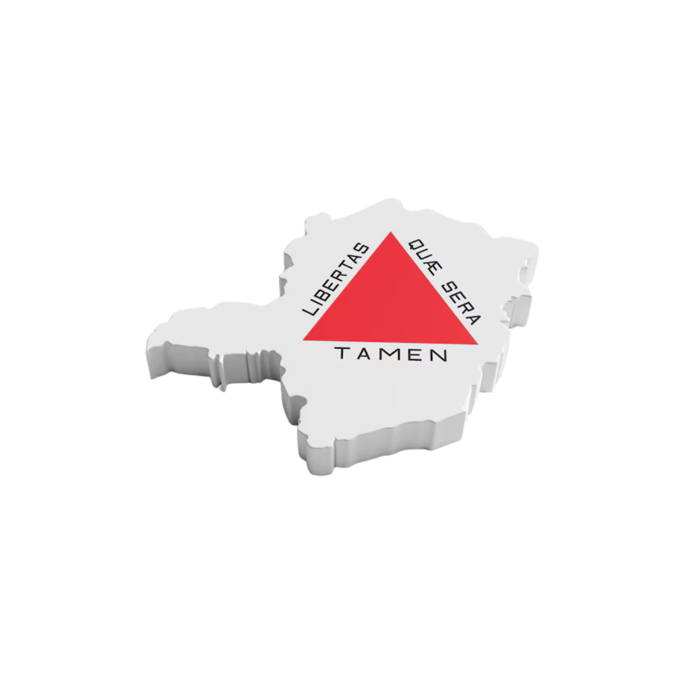

Características principais: A Região Norte é conhecida pela sua grande produção agrícola e pecuária. A principal atividade econômica é a produção de grãos, além da pecuária, com destaque para a produção de leite e carne.
O que mais se produz: Grãos (soja, milho, feijão), leite e café.
Quantidade de produtos produzidos: A produção de leite na região é uma das maiores do estado. Em 2022, Minas Gerais produziu cerca de 9 bilhões de litros de leite, com grande parte vinda do Norte. A produção de soja no Norte gira em torno de 2 a 3 milhões de toneladas por ano. A região também contribui significativamente para a produção de café do estado.
Riqueza gerada pelo produto: O leite é um dos maiores geradores de receita para a região, movimentando bilhões no mercado de lácteos. A soja também tem grande impacto econômico, contribuindo com bilhões de reais à economia estadual e nacional.
Top 3 maiores clientes:
Características principais: A Região Sul é reconhecida pela agricultura diversificada e pela forte presença do setor cafeeiro. É uma das regiões mais desenvolvidas economicamente, com boa infraestrutura e forte atuação agroindustrial.
O que mais se produz: Café, leite e frutas (maçã, pêssego, goiaba).
Quantidade de produtos produzidos: O Sul contribui com cerca de 50% da produção estadual de café, que gira em torno de 30 milhões de sacas por ano. Também é importante na produção de leite e se destaca na produção de maçãs e pêssegos.
Riqueza gerada pelo produto: O café gera bilhões em exportações, sendo Minas Gerais responsável por mais de 50% da produção nacional. O leite movimenta indústrias locais, gerando empregos e renda.
Top 3 maiores clientes:
Características principais: Rica em recursos minerais, especialmente ferro, e com forte presença agrícola. A mineração é economicamente importante, com destaque para Itabira, Mariana e Ouro Preto.
O que mais se produz: Minério de ferro, café e grãos (soja e milho).
Quantidade de produtos produzidos: A região participa significativamente na extração de ferro, com milhões de toneladas por ano. A produção de café é importante em cidades como Caratinga e Manhuaçu. A produção de grãos também é relevante.
Riqueza gerada pelo produto: A mineração de ferro gera bilhões em exportações, principalmente para a China. O café e os grãos também têm papel econômico importante, embora menor que a mineração.
Top 3 maiores clientes:
Características principais: Destaca-se pela produção agrícola diversificada e pela pecuária. Cultiva grãos, frutas e cana-de-açúcar, além da pecuária de corte.
O que mais se produz: Grãos (soja e milho), cana-de-açúcar e carne bovina.
Quantidade de produtos produzidos: A produção de grãos é alta, com destaque para a soja. A cana-de-açúcar abastece usinas de etanol e açúcar. A região também tem forte participação na produção de carne bovina.
Riqueza gerada pelo produto: Soja, milho e cana-de-açúcar são importantes para o mercado interno e externo. A pecuária gera riqueza com exportações de carne para vários países.
Top 3 maiores clientes: